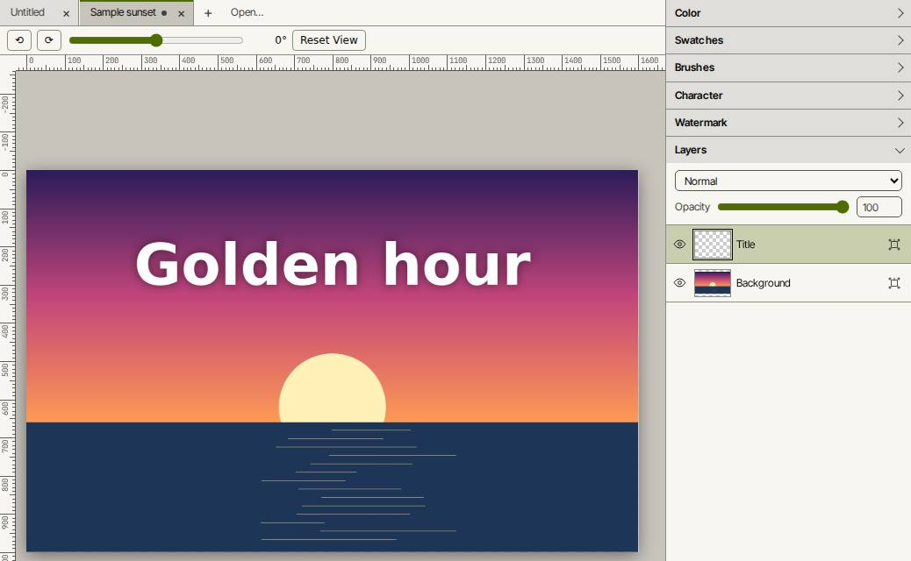

Layers and masks
Stack layers with masks, 17 blend modes and opacity for each layer. Work on several documents at once in tabs.
Slopographic app
A layered image editor for the browser. Layers, masks, blend modes and real PSD files. Your images stay on your device.

Stack layers with masks, 17 blend modes and opacity for each layer. Work on several documents at once in tabs.
Open and save layered PSD files. Guides and text layers keep their settings when you reopen them in PhotoSLOP.
Text layers with font, size, tracking, leading, anti-aliasing and warp. Style part of a line differently from the rest, in the same layer.
More than 40 filters, brush packs, and Photoshop .abr brush import.
Rulers, guides, a grid, and snapping for moves, crops and transforms. Autosave keeps unsaved work in this browser.
| Feature | PhotoSLOP | Typical desktop image editor |
|---|---|---|
| Layers and layer masks | Yes | Included |
| Blend modes | Yes, 17 modes | Included |
| Open and save layered PSD files | Yes | Included |
| Filters | Yes, more than 40 | Included |
| Editable text layers with warp and character styling | Yes | Included |
| Guides, rulers, grid and snapping | Yes | Included |
| Brush packs and .abr brush import | Yes | Included |
| Layer styles: drop shadow, glow, bevel | Partly, dialog in progress | Included |
| Adjustment, fill and shape layers that stay editable | Not yet | Included |
| Autosave of unsaved work | Yes, in this browser | Included, recovery files |
| Runs in a browser, with nothing to install | Yes | Not included, desktop install |
| Works offline after the first load | Yes, one HTML file | Included, installed program |
| No account, no upload of your images | Yes | Usually needs a license key or activation |
| Editing on a phone | Yes, checked at 390 × 844 | Varies by product |
| Command search and rebindable shortcuts | Yes | Varies by edition |
PhotoSLOP column: "Yes" means the feature is in the app now. "Partly" and "Not yet" are listed honestly, with the details in the section below.
Files you open, paint and save never leave your device. There is no server, no account and no upload. The one network request is when you drag an image from another web page into the editor: the editor then fetches that image's address. No tracking runs unless the owner has turned it on in Settings.